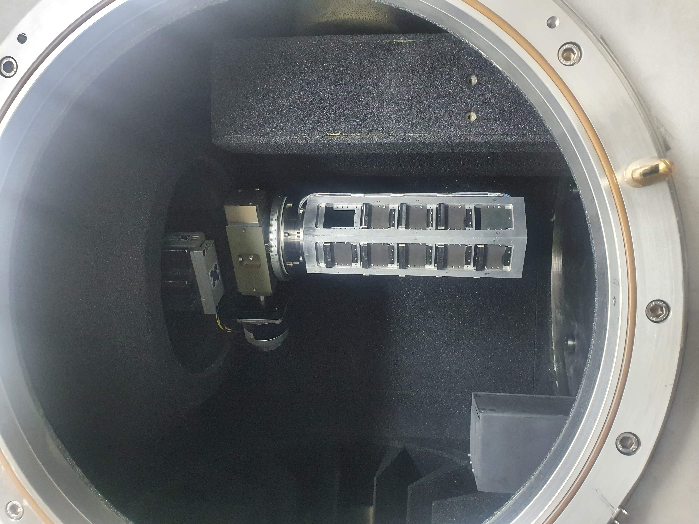

NIMROD
Warning
These instrument details pages provide historical context about the devices on a specific instrument, at the time they were migrated to IBEX. These pages may not be up to date with the latest instrument configuration.
This page collects information that will be useful for the implementation of the IBEX control system on NIMROD.
Background & Timeline
NIMROD is a diffractometer instrument at ISIS, on TS2. The NIMROD web page describes the background to the instrument.
NIMROD Equipment
The equipment listed below is used on NIMROD. Please add new information (e.g. new items of equipment, new notes, information about drivers, etc. to this table).
Manufacturer |
Model |
Type |
Connection |
Driver |
Notes |
|---|---|---|---|---|---|
ISIS |
DAE 2 |
Detector Electronics |
Ethernet |
||
GALIL |
Motion Controller |
Ethernet |
|||
??? |
4-blade jaws |
||||
ISIS |
??? |
ISIS Vacuum System |
|||
Pfeiffer |
TPG300 |
Vacuum Gauge |
RS-232 |
EPICS |
|
Pfeiffer |
TPG26x |
Vacuum Gauge |
RS-232 |
EPICS |
|
Eurotherm |
Temperature Controller |
All models at ISIS |
RS-232 |
||
ISIS |
NIMROD Sample Changer |
Sample Changer |
RS-232 |
||
Julabo |
FP-50 |
Water Bath |
RS-232 |
||
Julabo |
FP-52 |
Water Bath |
RS-232 |
||
Oerlikon |
Centre One |
Pressure Gauge |
RS-232 |
EPICS |
|
MKS |
PDR2000 |
Pressure Transducer |
RS-232 |
||
MKS |
Digital Pressure Controller |
RS-232 |
|||
ISIS |
Eurotherms |
RS-232 |
Note: DAE
Main Detector banks + fixed monitors.
Note: Chopper
NIMROD has no choppers.
Note: Jaws
NIMROD has 6 sets of 4-blade jaws controlled by Galils. Motion of jaws is coordinated? (see NIMROD Jaws VI).
Note: Vacuum System
The vacuum pressure on NIMROD is the pressure in the NIMROD tank/chamber itself. NIMROD only needs to monitor the vacuum pressure; scientists do not want to control the vacuum system from IBEX. Scientists also monitor the pressure of the guide, also using a TPG300. TPG300 support is implemented via #216 and #2063
Note: Vacuum Pump
NIMROD uses a vacuum pump (in conjunction with CCRs). A TPG26x is used to measure the pressure. TPG26x support was originally implemented via #1411, #2379 and #2578
Note: Eurotherm
Eurotherms are used to control temperature Orange Cryostat, CCR and Furnace devices.
Note: NIMROD Sample Changer
The NIMROD sample changer is a two-axis (vertical and rotation) sample changer controlled by a Galil.
As of July 2023, the lower limit for the vertical axis is not physically working, so be careful when changing soft limits for the sample changer’s vertical axis. The sample changer is set to home to the upper limit as the switch works.
Note: Water Bath
NIMROD uses two types of water bath, both Julabo models: FP-50 and FP-52.
See supported Julabo models for more details.
NIMROD uses the FP-52 model of Julabo most frequently (+90%), used in conjunction with the Sample Changer. Sometimes NIMROD uses water as the coolant/heating medium; sometimes it uses oil or glycol as the coolant/heating medium (Julabo/Presto A40 device).
According to the Water Baths page, NIMROD uses WB21 (which is a Julabo FB52-SL). This contradicts the above information - need to check this. The Julabo Commands spreadsheet indicates that WB21 is configured to use the “small” Julabo command set.
NIMROD also uses oil bath OB-1 (Presto A40 oil bath) from time to time.
Note: Oerlikon
Oerlikon Centre-One pressure gauges appear to obsolete.
There is a manual here: C:\LabVIEW Modules\Drivers\Oerlikon Centre One
Note: MKS
The MKS PDR2000A Pressure Transducer provides power and readout up to two (2) Baratron® pressure transducers.
The MKS PR4000B Digital Power Supply and Display module is available with either one or two channels. The single-channel version controls one pressure transducer or one mass flow controller. The two-channel version supports up to two pressure transducers or two mass flow controllers, or one of each.
There are EPICS drivers for a variety of MKS devices (although there is a driver for a PR4000B pressure transducer, there does not appear to be one for a PDR2000).
The manual for the MKS PR4000B is here: \\isis\shares\ISIS_Experiment_Controls\MKS_PR4000B_Controller.
Note: Please refer to ticket #3962 when implementing support for the PDR2000 on NIMROD.
NIMROD Specialist UI Panels
NIMROD has the following specialist panels/systems:
NIMROD Jaws - calculates jaw settings based on moderator projection.
NIMROD Notes
Pumps
NIMROD tends to use a lot of different pumps (e.g. Oerlikon, Edwards, Pfeiffer). Worth having support for a variety of pumps to make switching between pumps easy.
Gas Panel
NIMROD will be getting a new gas panel system, which will use two MKS PR4000-B pressure controllers. IBEX will need to display pressure readings (up to 4, 2 from each).
Neutron Camera
There is a plan to install a neutron camera on NIMROD. The camera would be a Neutron Optics device. It will be mounted on a simple axis to move it in/out of the beam.
This has been installed on Galil 4 axis 5 (D) on NIMROD. Motion setpoints have been added under the name CAMERA for this, with positions for in/out of the beam.

Electrochemical Cell Positioner
A device is being built to position an electrochemical cell in the beam. This is a single linear axis with continuous positioning. We need not concern ourselves with the cell itself as this will be controlled by the users.